Introducción
En este informe mostraremos los distintos ejercicios realizados para la Entrega 1 de la asignatura Estadística Computacional. Constará de distintos apartados, diferenciados por el epígrafe al que pertenezcan en el libro de R proporcionado por el profesor.
No todos los epígrafes tienen trabajo realizado, algunos de ellos tienen un desarrollo más profundo ya que el contenido lo requiere. Por otra parte, algunos apartados constarán de funciones más complejas mientras que otros se limitarán a mostrar gráficas.
Por otra parte, comentar que todo el trabajo se ha realizado sin plantilla HTML ni CSS, ya que he cursado la asignatura Programación Web del grado en Ingeniería Informática y me he visto capaz de realizar la web desde cero sin problema. Además, se podrían separar todos los apartados en distintos archivos y enlazarlos mediante hipervínculos, pero según he entendido de la frase:
"Consiste en crear en una carpeta un archivo .Rhtml que permita presentar todos los ejercicios que ya has realizado en el bloque anterior",
solo he de crear un archivo, que generará un único fichero HTML. Así, se ha creado un índice que nos llevará a cada uno de los apartados que aparecen en la página
Simulación de extracción de cartas de una baraja y otras simulaciones
Para este epígrafe se han realizado diversos estudios sobre la distribución de tres simulaciones: obtener 4 de ases en una baraja (ya implementado en el libro de R), obtener \(N\) caras lanzando una moneda y obtener \(N\) seises lanzando un dado. Además, se ha implementado una función que calculará cuantas veces hay que llamar a la función de extracción para obtener el resultado deseado en menos de \(M\) intentos.
Ya que todas estas funciones dependen de el método sample, que devuelve resultados aleatorios, fijaremos una semilla para obtener siempre los mismos resultados.
Extraer cuatro Ases de una baraja
Consiste en realizar un muestreo con reemplazamiento de una baraja de 52 cartas, hasta obtener los cuatro ases e indicar el número de extracciones necesarias. Se utiliza la función sample para realizar cada extracción. El código de la extracción es el siguiente:
CuatroAses = function(Mostrar = F,Maximo=1000){
Extracciones = 0
Resultado = 1:Maximo
Ases = c(0,0,0,0)
repeat{
if (Maximo <= Extracciones){
if(Mostrar){
cat("No he podido obtener cuatro ases en ",Extracciones,"extracciones. \n")
}
return(list(E = NA, R = Resultado, Conseguido=F))
}
Extracciones = Extracciones + 1
SacoUna = sample(52, 1)
Resultado[Extracciones] = SacoUna
if(SacoUna %% 13 != 1) {next} # %% es el módulo
Ases[(SacoUna -1) %/% 13 + 1] = 1 # %/% es la división entera
if(sum(Ases)==4) {break}
}
length(Resultado)=Extracciones
if(Mostrar){
cat("He necesitado", Extracciones,"extracciones para obtener cuatro ases.\n")
}
return(list(E = Extracciones, R = Resultado, Conseguido=T))
}
A continuación, hacemos varias llamadas a la función para comprobar su correcto funcionamiento:
resultado=CuatroAses(Mostrar=T)
## He necesitado 63 extracciones para obtener cuatro ases.
resultado=CuatroAses(Mostrar=T, Maximo=50)
## No he podido obtener cuatro ases en 50 extracciones.
(Utilizamos la variable resultado para que no nos muestre por pantalla todos los datos de la ejecución, pues no nos servirán por el momento)
Tras esto, escribimos una función que nos muestre la distribución que sigue nuestra extracción de cartas, la cuál se encargará de llamar n veces al método CuatroAses() y devolverá un vector con el número de extracciones que se han necesitado en cada llamada.
DistriAses = function(n = 5,Maximo=1000) {
Saco = vector(length=n)
for(i in 1:n)
Saco[i] = CuatroAses(F,Maximo)$E
Saco
}
Con la función summary implementada por defecto en R podremos ver un resumen de los resultados obtenidos por nuestra función DistriAses, con diversos elementos estadísticos asociados a nuestros resultados:
DistribucionAses=DistriAses(n=2000)
summary(DistribucionAses)
## Min. 1st Qu. Median Mean 3rd Qu. Max.
## 8.0 64.0 96.0 108.1 137.0 463.0
Más adelante veremos algunas gráficas referentes a esta distribución.
Como hablábamos anteriormente, se ha desarrollado una función que llamará al método principal, CuatroAses, tantas veces como sea necesario hasta extraer cuatro ases en menos de n extracciones. El código es el siguiente:
CuantasLlamadasNecesitaAses = function(n=20) {
cuantas=0
repeat{
necesitadas = CuatroAses()$E
cuantas=cuantas+1
if(necesitadas<=n){
break
}
}
cat("He necesitado llamar a CuatroAses() ", cuantas, " veces para
extraer 4 ases en menos de ", n, " extracciones.\n")
}
A continuación vemos distintas llamadas a esta función disminuyendo el valor de n. Debido a la aleatoridad de las ejecuciones, el número de llamadas a CuatroAses no tiene por qué descender cuando disminuyamos el valor de n.
CuantasLlamadasNecesitaAses(10)
## He necesitado llamar a CuatroAses() 1578 veces para
## extraer 4 ases en menos de 10 extracciones.
CuantasLlamadasNecesitaAses(9)
## He necesitado llamar a CuatroAses() 4323 veces para
## extraer 4 ases en menos de 9 extracciones.
CuantasLlamadasNecesitaAses(8)
## He necesitado llamar a CuatroAses() 663 veces para
## extraer 4 ases en menos de 8 extracciones.
CuantasLlamadasNecesitaAses(7)
## He necesitado llamar a CuatroAses() 724 veces para
## extraer 4 ases en menos de 7 extracciones.
CuantasLlamadasNecesitaAses(6)
## He necesitado llamar a CuatroAses() 78674 veces para
## extraer 4 ases en menos de 6 extracciones.
CuantasLlamadasNecesitaAses(5)
## He necesitado llamar a CuatroAses() 1029 veces para
## extraer 4 ases en menos de 5 extracciones.
CuantasLlamadasNecesitaAses(4)
## He necesitado llamar a CuatroAses() 276509 veces para
## extraer 4 ases en menos de 4 extracciones.
En el último caso, estaremos intentando obtener 4 ases seguidos.
Por otra parte, podemos implementar una función en la que se busque obtener 4 ases sin reemplazamiento en la baraja, por lo que el máximo número de extracciones será 52 (el número de cartas en una baraja). A continuación mostramos el código de la función, así como el asociado al cálculo de su distribución.
CuatroAses.Sin =function(Mostrar = F){
Ases = 0
Resultado = sample(52)
for (i in 1:52){
if(Resultado[i] %% 13 != 1) {next} # %% es el módulo
Ases = Ases+1
if(Ases==4) {break}
}
if(Mostrar){
cat("He necesitado", i, "extracciones para obtener cuatro ases\n")
}
return(list(E = i,R = Resultado[1:i]))
}
DistriAses.Sin = function(n = 5){
Saco = vector(length=n)
for(i in 1:n)
Saco[i] = CuatroAses.Sin()$E
Saco
}
Notar la que la función CuatroAses.Sin no tiene el atributo Maximo que hemos visto anteriormente, ya que esta función siempre acabará encontrando los cuatro ases al no haber reemplazamiento. Ejecutando estas funciones obtendremos:
resultado=CuatroAses.Sin(Mostrar=T)
## He necesitado 28 extracciones para obtener cuatro ases
DistribucionAses.Sin=DistriAses.Sin(n=2000)
summary(DistribucionAses.Sin)
## Min. 1st Qu. Median Mean 3rd Qu. Max.
## 5.00 38.00 45.00 42.64 49.00 52.00
Para finalizar este apartado, veamos un histograma para la extracción de ases con y sin reemplazamiento, ejecutando las siguientes funciones:
hist(DistribucionAses, main="Histograma para la extracción de cartas
CON reemplazamiento", xlab="Número de extracciones hasta obtener 4 ases",
ylab="Frecuencia", col="orange", breaks=20)
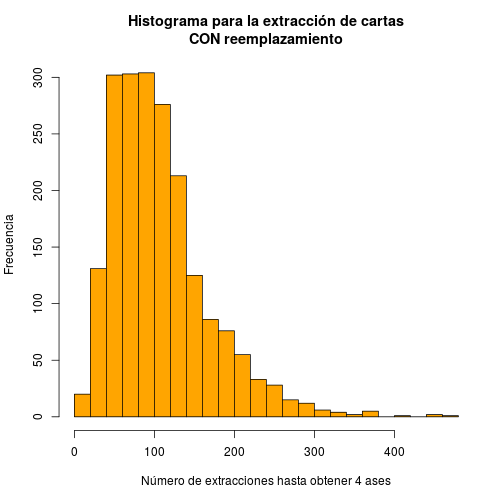
hist(DistribucionAses.Sin, main="Histograma para la extracción de cartas
SIN reemplazamiento", xlab="Número de extracciones hasta obtener 4 ases",
ylab="Frecuencia", col="yellow", breaks=20)
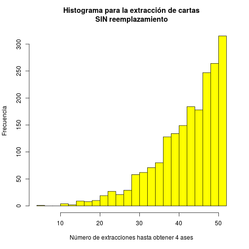
Estos histogramas muestran la frecuencia del número de extracciones que hemos necesitado para obtener 4 ases; podemos ver que para la extracción con reemplazamiento el número medio de extracciones realizadas está en torno al 100, mientras que para la extracción sin reemplazamiento, la frecuencia media tiende a 50.
Obtener \(N\) caras en una moneda
Al igual que en el anterior apartado, escribiremos una función que se encargue de lanzar una moneda y contar el número de veces que se obtiene cara. Se lanzará la moneda hasta obtener n caras o hasta llega a un máximo de lanzamientos, tiradas. El código, junto a un ejemplo de ejecución, se muestra a continuación:
ObtenerNCaras = function(mostrar=F,N=5,tiradas=20){
nCaras=0
nombres_resultados=c("Cara","Cruz")
obtenidos=array()
for(i in 1:tiradas){
lanzo = sample(2, 1)
obtenidos[i]=nombres_resultados[lanzo]
if(lanzo==1) {nCaras=nCaras+1}
if(nCaras==N){
if(mostrar){
cat("He obtenido", N ," caras en ", i ," lanzamientos.\n")
return(list(necesitadas=i, resultado=obtenidos))
}else{
return(i)
}
}
}
if(mostrar){
cat("No he conseguido obtener ", N ," caras en ", tiradas, " lanzamientos.\n")
return(list(necesitadas=tiradas, resultado=obtenidos))
}else{
return(tiradas)
}
}
ObtenerNCaras(mostrar=T, N=10, tiradas=20)
## No he conseguido obtener 10 caras en 20 lanzamientos.
## $necesitadas
## [1] 20
##
## $resultado
## [1] "Cara" "Cara" "Cara" "Cruz" "Cara" "Cruz" "Cruz" "Cruz" "Cara" "Cruz"
## [11] "Cara" "Cruz" "Cara" "Cara" "Cara" "Cruz" "Cruz" "Cruz" "Cruz" "Cruz"
Al igual que en el caso de los ases, esta función está implementada junto a la utilizada para obtener su distribución y el método que calculará el número de veces que hay que llamar a ObtenerNCaras para obtener un número determinado de caras en menos de tiradas lanzamientos.
DistriCaras = function(intentos=5,caras=5,Maximo=1000) {
Saco = vector(length=intentos)
for(i in 1:intentos)
Saco[i] = ObtenerNCaras(F,caras,Maximo)
Saco
}
DistribucionMonedas.5caras=DistriCaras(2000)
summary(DistribucionMonedas.5caras)
## Min. 1st Qu. Median Mean 3rd Qu. Max.
## 5.00 8.00 10.00 10.05 12.00 23.00
DistribucionMonedas.20caras=DistriCaras(2000,20)
summary(DistribucionMonedas.20caras)
## Min. 1st Qu. Median Mean 3rd Qu. Max.
## 24.00 36.00 40.00 40.12 44.00 69.00
(Con estas distribuciones mostraremos histogramas más adelante)
CuantasLlamadasNecesitaMonedas = function(ncaras=5,tiradas=10) {
cuantas=0
repeat{
necesitadas = ObtenerNCaras(F,ncaras,1000)
cuantas=cuantas+1
if(necesitadas<=tiradas){
break
}
}
cat("He necesitado llamar a ObtenerNCaras() ", cuantas, " veces
para obtener ", ncaras, " caras en menos (o igual) de ", tiradas,"
tiradas.\n")
}
CuantasLlamadasNecesitaMonedas(10,13)
## He necesitado llamar a ObtenerNCaras() 40 veces
## para obtener 10 caras en menos (o igual) de 13
## tiradas.
CuantasLlamadasNecesitaMonedas(10,12)
## He necesitado llamar a ObtenerNCaras() 116 veces
## para obtener 10 caras en menos (o igual) de 12
## tiradas.
CuantasLlamadasNecesitaMonedas(10,11)
## He necesitado llamar a ObtenerNCaras() 332 veces
## para obtener 10 caras en menos (o igual) de 11
## tiradas.
CuantasLlamadasNecesitaMonedas(10,10)
## He necesitado llamar a ObtenerNCaras() 249 veces
## para obtener 10 caras en menos (o igual) de 10
## tiradas.
Al igual que en el caso de la extracción de cartas, la función CuantasLlamadasNecesitaMonedas(10,10) comprobará el número de veces que hay que llamar al método principal para obtener 10 caras seguidas.
Para terminar, veamos los histogramas de las frecuencias asociadas a 2000 llamadas a la función ObtenerNCaras, con \(N=5\) y \(N=20\).
hist(DistribucionMonedas.5caras, main="Histograma para el
lanzamiento de monedas", xlab="Número de lanzamientos hasta obtener 5 caras",
ylab="Frecuencia", col="blue", breaks=20)
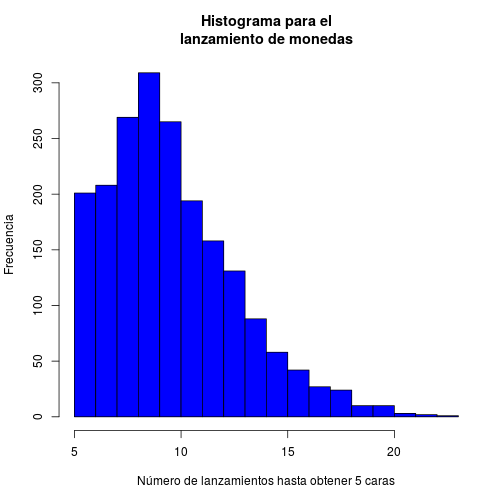
En este primer gráfico podemos ver que, aunque haya un frecuencia alta para cinco lanzamientos, el caso más común está en torno a 10 lanzamientos, que es lo más normal, pues hay un 50% de probabilidad de obtener cara o cruz, y por tanto en 10 lanzamientos es probable que 5 sean caras. Notar que hay casos en los que hay que lanzar la moneda hasta mas de 25 veces, por lo que la probabilidad del 50% no totalmente fiable.
hist(DistribucionMonedas.20caras, main="Histograma para el
lanzamiento de monedas", xlab="Número de lanzamientos hasta obtener 20 caras",
ylab="Frecuencia", col="grey", breaks=20)
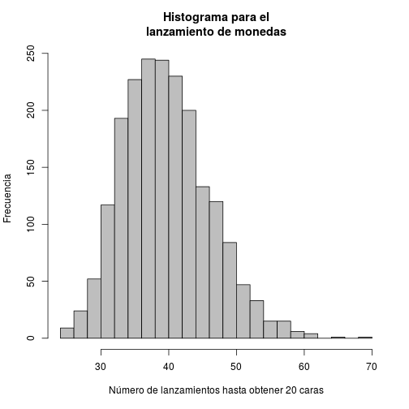
Al igual que en el caso anterior, lo más común es obtener 20 cara realizando en torno a 40 lanzamientos, por el mismo argumento utilizado para el anterior histograma.
Obtener \(N\) seises en un dado
Las funciones definidas para obtener \(N\) seises y sus asociadas (distribución y número de llamadas) son iguales a la que se ha implementado para las monedas, modificando el intervalo del que obtendremos valores con la función sample. Así, el código es el siguiente:
##########################################################
ObtenerNSeisEnDado = function(mostrar=F,N=5,tiradas=20){
nSeises=0
obtenidos=array()
for(i in 1:tiradas){
obtenidos[i]=sample(6, 1)
if(obtenidos[i]==6) {nSeises=nSeises+1}
if(nSeises==N){
if(mostrar){
cat("He obtenido", N ," seis en ", i ," lanzamientos
del dado.\n")
return(list(necesitadas=i, resultado=obtenidos))
}else{
return(i)
}
}
}
if(mostrar){
cat("No he conseguido obtener ", N ," seis en
", tiradas, " lanzamientos del dado.\n")
return(list(necesitadas=tiradas, resultado=obtenidos))
}else{
return(tiradas)
}
}
##########################################################
DistriDado = function(intentos=5,seises=5,Maximo=1000) {
Saco = vector(length=intentos)
for(i in 1:intentos)
Saco[i] = ObtenerNSeisEnDado(F,seises,Maximo)
Saco
}
##########################################################
CuantasLlamadasNecesitaDado = function(nseises=5,tiradas=10) {
cuantas=0
repeat{
necesitadas = ObtenerNSeisEnDado(F,nseises,1000)
cuantas=cuantas+1
if(necesitadas<=tiradas){
break
}
}
cat("He necesitado llamar a ObtenerNSeisEnDado() ", cuantas, "
veces para obtener ", nseises, " seis en menos (o igual) de
", tiradas, " tiradas del dado.\n")
}
##########################################################
A continuación, podemos ver un correcto funcionamiento de nuestro código y guardaremos la distribución de obtener 15 seises para ver un resumen de los datos obtenidos y mostrar un histograma más adelante:
resultado=ObtenerNSeisEnDado(mostrar=T)
## No he conseguido obtener 5 seis en
## 20 lanzamientos del dado.
DistribucionDado=DistriDado(intentos=2000,15)
summary(DistribucionDado)
## Min. 1st Qu. Median Mean 3rd Qu. Max.
## 30.00 76.00 88.00 90.45 104.00 200.00
Finalmente, el histograma para la distribución calculada es:
hist(DistribucionDado, main="Histograma para el lanzamiento de
dados", xlab="Número de lanzamientos hasta obtener 15 seises",
ylab="Frecuencia", col="red", breaks=20)
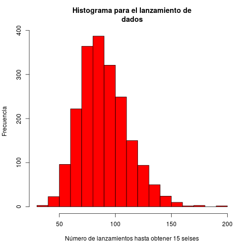
Tal como se muestra en la media calculada por summary, la distribución se centra en torno a 80-90 lanzamientos.
Deducciones a partir de los resultados obtenidos
Utilizando todos los resultados calculados anteriormente con las funciones Distri[Objeto], summary y hist, podemos ver que todas las distribuciones siguen una distribución normal centrada en la media. Esto ha de ser debido a que el método de R sample devuelva número aleatorios basándose en una distribución normal, haciendo así que las funciones que hemos desarrollado mantengan esa distribución normal.
Una vez hemos terminado este apartado, borremos todas las variables que hemos utilizado ya que en adelante no las necesitaremos.
Función en una cuadrı́cula y Procesos no lineales
En este apartado veremos los epígrafes 3.5.7 y 3.5.8 con el fin de familiarizarnos con las funciones para mostrar gráficas por pantalla. En el primero de estos epígrafes, definiremos una función para calcular la distancia de \(N\) puntos dados en dos dimensiones al origen utilizando el producto exterior. El código para esto será simple.
distancia.origen.producto_exterior = function(x,y){
outer(x,y,function(x,y) sqrt(x^2+y^2))
}
distancia.origen.producto_exterior(-1:1,3:5)
## [,1] [,2] [,3]
## [1,] 3.162278 4.123106 5.09902
## [2,] 3.000000 4.000000 5.00000
## [3,] 3.162278 4.123106 5.09902
Con todo esto, nos disponemos a dibujar un gráfica en tres dimensiones con la función persp, donde dos ejes serán los valores \(x\) e \(y\) pasados a la función de distancia, y el eje restante representará la distancia entre dichos puntos. Para hacer más agradable a la vista la gráfica mostrada, cambiaremos el ángulo de visión (theta=30, phi=30) así como el color (col="orange") y le daremos una ligera sombra (shade=0.2).
X=distancia.origen.producto_exterior(-12:10,-3:24)
persp(X, main="Distancias", theta=30, phi=30, col="orange", shade=0.2)
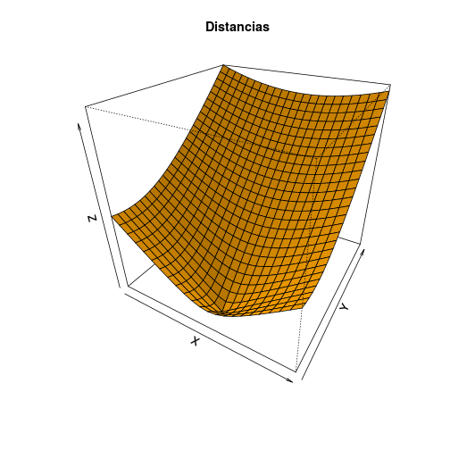
En el epígrafe 3.5.8 se definen tres funciones que corresponden a procesos no lineales descritos en Dong que, de forma sencilla, definen estructuras complejas; vamos a estudiar cómo funciona la función plot sobre estos procesos no lineales. Comenzamos definiendo las tres funciones a representar.
dong1=function(numero = 100){
x = vector(mode = "numeric", length = numero)
y = vector(mode = "numeric", length = numero)
x[1] = 1
y[1] = 1
for(i in 2:numero){
if(sample(2,1) == 2) {m = 1}
else {m = -1}
x[i] = 0.5 * x[i - 1] + 0.5 * y[i - 1] + m
y[i] = -0.5 * x[i - 1] + 0.5 * y[i - 1] + m
}
return(list(x = x[2:numero], y = y[2:numero]))
}
dong2=function(numero = 100){
x = vector(mode = "numeric", length = numero)
y = vector(mode = "numeric", length = numero)
x[1] = 1
y[1] = 1
for(i in 2:numero){
a = sample(3,1)
if(a == 1){
m = 0
n = 0
}else{
if(a == 2){
m = 0.5
n = 0
}else{
m = 0.25
n = 0.5
}
}
x[i] = 0.5 * x[i - 1] + m
y[i] = 0.5 * y[i - 1] + n
}
return(list(x = x[2:numero], y = y[2:numero]))
}
dong3=function(numero = 100){
x = vector(mode = "numeric", length = numero)
y = vector(mode = "numeric", length = numero)
x[1] = 1
y[1] = 1
for(i in 2:numero){
a = sample(100,1)
if(a == 1){
x[i] = 0
y[i] = 0.25 * y[i - 1]
}else{
if(a <= 86){
x[i] = 0.85 * x[i - 1] + 0.04 * y[i - 1]
y[i] = -0.04 * x[i - 1] + 0.85 * y[i - 1] + 1.6
}else{
if(a <= 93){
x[i] = 0.2 * x[i - 1] - 0.26 * y[i - 1]
y[i] = 0.26 * x[i - 1] + 0.22 * y[i - 1]
}else{
x[i] = -0.15 * x[i - 1] + 0.28 * y[i - 1]
y[i] = 0.26 * x[i - 1] + 0.24 * y[i - 1] + 1
}
}
}
}
return(list(x = x[2:numero], y = y[2:numero]))
}
A continuación mostraremos los distintos valores generados por las funciones de los procesos no lineales representando cada uno de ellos con un punto; para ello, utilizaremos la función plot, a la que especificaremos el color de los puntos así como el título y el nombre asociado a cada eje de coordenadas. El resultado es el siguiente:
plot(dong1(), main="Función dong1", xlab="x", ylab="y", type="p", col="darkgoldenrod4")
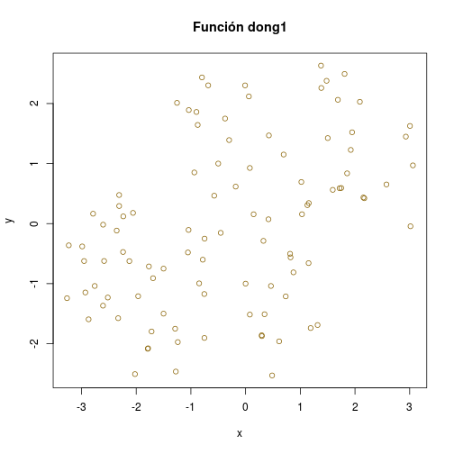
plot(dong2(), main="Función dong2", xlab="x", ylab="y", type="p", col="darkblue")
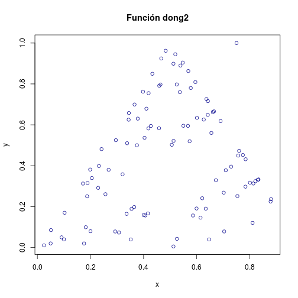
plot(dong3(), main="Función dong3", xlab="x", ylab="y", type="p", col="darkgreen")
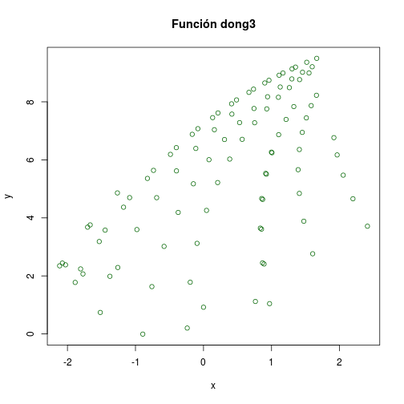
Para terminar, como en el apartado anterior, borremos las variables utilizadas.
Lista de búsqueda y entornos
En este apartado aprenderemos a gestionar las librerías a utilizar en nuestros programas, así como a visualizar las que tenemos instaladas; para esto último, utilizaremos el comando search, que nos muestra todos los lugares donde se encuentran objetos.
## [1] ".GlobalEnv" "package:knitr" "package:stats"
## [4] "package:graphics" "package:grDevices" "package:utils"
## [7] "package:datasets" "package:methods" "Autoloads"
## [10] "package:base"
Podemos ver que, entre todos los paquetes base instalados, tenemos el paquete knitr, el cuál estamos utilizando actualmente para compilar este código Rhtml. Para instalarlo, hemos ejecutado previamente install.packages("knitr", dependencies = TRUE) (realmente esta explicación de instalación correspondría al apartado Función library), y tras ello lo hemos puesto en funcionamiento con library(knitr). Así, podemos utilizar todas las funcionalidades de knitr, y una vez terminemos de utilizar este paquete, lo eliminaremos de la lista con detach.
detach(package:knitr)
search()
## [1] ".GlobalEnv" "package:stats" "package:graphics"
## [4] "package:grDevices" "package:utils" "package:datasets"
## [7] "package:methods" "Autoloads" "package:base"
Lectura de hojas de datos
En este apartado vamos a aprender a leer datos desde un fichero para almacenarlos en un dataframe y procesarlos; concretamente, leeremos los ficheros Datos.txt y Datos2.txt proporcionados por el profesor. Para ello, necesitaremos funciones que lean ficheros CSV.
Las funciones read.csv y read.csv2 hacen exactamente lo mismo, solo que una de ellas está diseñada para los países que utilizan la coma como punto decimal y otra para los que separan los decimales con un punto. Aparte, la manera de separar los datos entre columnas difiere para cada función (coma o punto y coma).
datos <- read.csv("./resources/data/Datos.txt")
datos2 <- read.csv("./resources/data/Datos2.txt", header=TRUE, sep=" ")
Como podemos ver, para guardar el primero de nuestros ficheros a leer nos basta con usar la función read.csv sin parámetros adicionales, mientras que para el segundo fichero hemos de avisar que la primera lı́nea del archivo contiene los nombres de las variables (header=TRUE) y que el separador entre valores es el espacio (sep=" ").
Datos.txt
Una vez almacenados todos los datos, procedamos al estudio de éstos. Empecemos por el primero de los ficheros leídos; veamos qué contiene.
## Peso Altura Edad Sexo
## 1 75 175 21 Hombre
## 2 81 178 22 Hombre
## 3 56 162 22 Mujer
## 4 68 180 21 Mujer
## Peso Altura Edad Sexo
## Min. :55.00 Min. :155.0 Min. :21.00 Hombre:20
## 1st Qu.:62.00 1st Qu.:164.5 1st Qu.:21.00 Mujer :16
## Median :71.50 Median :174.0 Median :22.00
## Mean :70.72 Mean :172.9 Mean :22.14
## 3rd Qu.:78.25 3rd Qu.:181.0 3rd Qu.:23.00
## Max. :89.00 Max. :190.0 Max. :25.00
Vemos que el fichero contiene una serie de instancias, correspondientes a distintas personas, 20 hombres y 16 mujeres, de entre 21 y 25 años, en las que se especifica el peso y la altura de cada individuo. Para ver la relación entre las distintas variables y los distintos valores, realicemos varias gráficas. Empecemos mostrando una matriz de scatter plots, donde podremos ver representados los valores de todas las instancias y la relación entre ellos:
plot(datos, col=c("red","blue","orange","green"), pch=19)
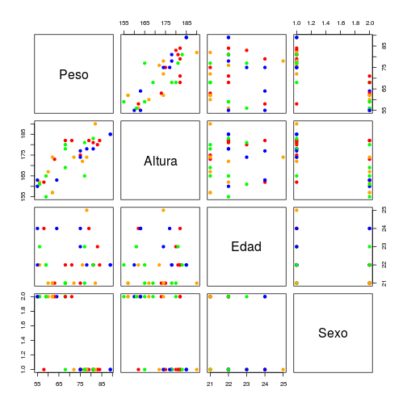
Tras esto, podemos ver un histograma para cada uno de los atributos del dataframe, que mostraremos en una sola imagen utilizando la orden layout.
layout(matrix(c(1,1,2,3), 2, 2, byrow = TRUE))
hist(datos$Altura, main="Histograma Altura", xlab="Altura en cm", col="orange")
hist(datos$Peso, main="Histograma Peso", xlab="Peso en kg", col="blue")
hist(datos$Edad, main="Histograma Edad", xlab="Edad", col="green")
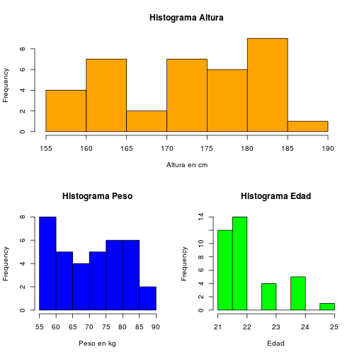
Con esto podemos ver que la mayor parte de instancias almacenadas en el dataframe tienen 21-22 años. Para continuar este estudio, podemos dibujar un diagrama de caja, que representará nuestros datos a través de sus cuartiles.
boxplot(datos, main="Diagrama de caja para Datos1.txt",
col=c("red","blue","yellow","green"))
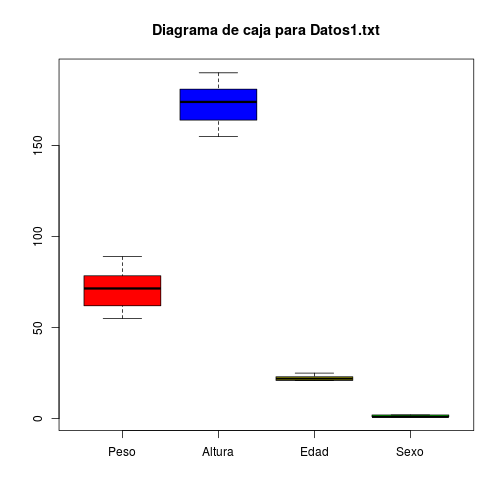
Los bigotes de cada caja representan el máximo y el mínimo de los valores que toma cada atributo. Las cajas representadas para "Edad" y "Sexo" son muy pequeñas, pues su rango de valores es muy pequeño.
Por último, veamos el heatmap asociado a nuestros datos. Esta gráfica solo acepta valores numéricos, por lo que hemos de eliminar la columna "Sexo" que almacena valores char. Lo haremos de manera un poco rudimentaria, pero en el apartado Función library instalaremos un paquete que nos facilitará el trabajo.
array_sin_sexo=c(datos$Edad, datos$Peso, datos$Altura)
datos_sin_sexo=matrix(data=array_sin_sexo, ncol=3, byrow=FALSE)
heatmap(datos_sin_sexo, scale="column", main="Heatmap de Datos.txt", labCol=c("Edad","Peso","Altura"))
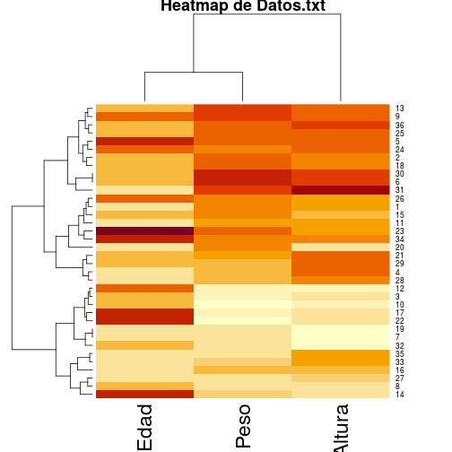
En esta gráfica podemos ver la magnitud de cada valor de las diferentes instancias en función de su intensidad de color. Notar que hemos especificado en los parámetros de la función heatmap que normalice los datos por columnas (scale="column"), pues si no lo hiciéramos la columna de la altura tomaría colores más intensos que el resto de columnas, pues es la que mayores valores toma.
Datos2.txt
Hagamos como en el caso anterior, y comencemos viendo qué hay en el dataframe tratado
## Nombre Peso Altura Edad Sexo
## 1 Juana Garcia 77 1.63 23 M
## 2 Silvia Lopez 58 1.63 23 M
## 3 Andres Garces 89 1.85 26 H
## 4 Laura Perez 55 1.62 23 M
## Nombre Peso Altura Edad Sexo
## Adela :1 Min. :47.0 Min. :1.600 Min. :22.00 H:7
## Alberto Garcia:1 1st Qu.:58.0 1st Qu.:1.630 1st Qu.:23.00 M:7
## Andres Garces :1 Median :65.0 Median :1.675 Median :25.50
## Diego Moreno :1 Mean :67.5 Mean :1.699 Mean :25.93
## Juana Garcia :1 3rd Qu.:76.5 3rd Qu.:1.762 3rd Qu.:26.00
## Juan Trucha :1 Max. :89.0 Max. :1.850 Max. :42.00
## (Other) :8
Volvemos a tener un conjunto de datos sobre altura, peso, sexo y edad, aunque con menos instancias que anteriormente (7 hombres y 7 mujeres) y con un intervalo de edad mayor (de 22 a 42 años). La diferencia más notable con el dataframe anterior es que esta vez incluirá los nombres de cada individuo, aunque realmente esto no nos interesará para la posterior visualización de datos.
Una vez más, veamos como se distribuyen nuestros datos con una matriz de gráficas de puntos, así como el histograma de cada atributo (numérico) del dataset.
plot(datos2, col=c("black","red","blue","orange","green"), pch=19)
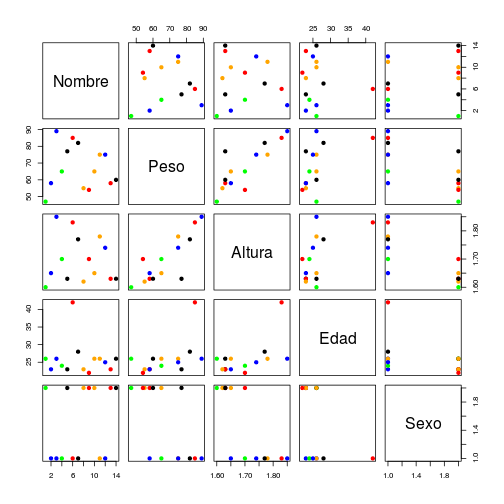
layout(matrix(c(1,1,2,3), 2, 2, byrow = TRUE))
hist(datos2$Altura, main="Histograma Altura", xlab="Altura en metros", col="orange")
hist(datos2$Peso, main="Histograma Peso", xlab="Peso en kg", col="blue")
hist(datos2$Edad, main="Histograma Edad", xlab="Edad", col="green")
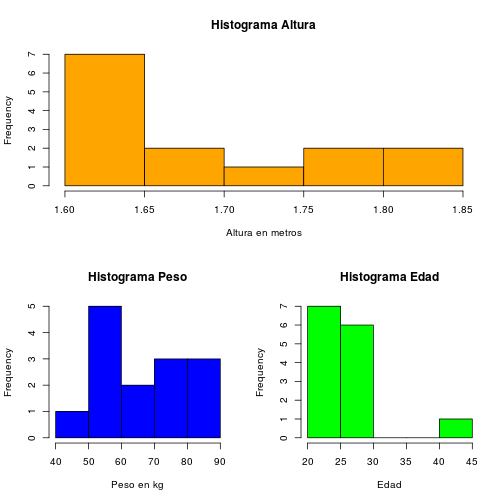
La primera fila y la primera columna de la primera gráfica podemos obviarlas, así como los puntos negros que aparecen en el resto de gráficas, pues el nombre de una persona no es determinante en el resto de atributos. Por otra parte, viendo los histogramas, podemos comprobar que aunque el rango de edad sea mayor que en el anterior caso, casi todas las instancias tienen un valor de entre 20 y 30 años. Concretamente, a partir de la matriz de gráficas superior, podemos comprobar que solo hay una persona con más de 40 años.
Veamos ahora el diagrama de caja. Ya que en este caso la altura está en metros, multipliquemos todos los valores de altura por 100 para que se pueda visualizar su diagrama de caja.
datos2$Altura=datos2$Altura*100
boxplot(datos2, main="Diagrama de caja para Datos2.txt",
col=c("black","red","blue","yellow","green"))
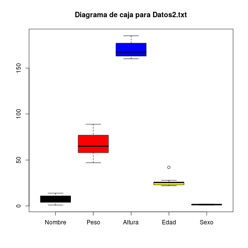
Usando el diagrama de caja de la edad podemos ver lo que se comentaba anteriormente; hay un valor atípico (de 42 años, representado por un circulito) en la distribución de edades entre las 14 instancias dadas.
Para finalizar esta sección, veamos el heatmap asociado al dataframe datos2, el cuál debe de contener solo las columnas con valores numéricos y tener estos valores normalizados, como en el caso anterior.
array2_sin_sexo=c(datos2$Edad, datos2$Peso, datos2$Altura)
datos2_sin_sexo=matrix(data=array2_sin_sexo, ncol=3, byrow=FALSE)
heatmap(datos2_sin_sexo, scale="column", main="Heatmap de Datos2.txt", labCol=c("Edad","Peso","Altura"))
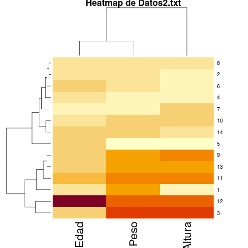
Gestión de Objetos
En este apartado trataremos distintos métodos para almacenar y recuperar objetos en y desde ficheros de texto. Para empezar, con la orden dump, guardaremos las variables especificadas del entorno en el que estamos trabajando en un fichero con el nombre que le asignemos. En nuestro caso, guardaremos todas las variables.
## [1] "array2_sin_sexo" "array_sin_sexo" "datos" "datos2"
## [5] "datos2_sin_sexo" "datos_sin_sexo"
dump(list=ls(),"./resources/data/dumpdata.R")
Para recuperar estos objetos utilizaremos la orden source, aunque es posible que el modo de los datos numéricos sea modificado. Mediante este procedimiento podremos exportar objetos con la finalidad de enviarlos a R en otro ordenador, aun teniendo otro sistema operativo.
Por otra parte, dispondremos de las órdenes dput y dget con las que guardaremos y obtendremos la definición de una variable, pero no su nombre.
dput(x=datos2, "./resources/data/dput.R")
datos2_copia <- dget("./resources/data/dput.R")
datos2_copia
## Nombre Peso Altura Edad Sexo
## 1 Juana Garcia 77 163 23 M
## 2 Silvia Lopez 58 163 23 M
## 3 Andres Garces 89 185 26 H
## 4 Laura Perez 55 162 23 M
## 5 Adela 47 160 26 M
## 6 Yolanda Lopez 60 163 26 M
## 7 Lola Martinez 54 170 22 M
## 8 Alberto Garcia 58 165 23 H
## 9 Pedro Vera 75 178 26 H
## 10 Diego Moreno 65 170 24 H
## 11 Julio Angulo 82 177 28 H
## 12 Juan Trucha 85 183 42 H
## 13 Rafael Perez 75 174 25 H
## 14 Monica Sanchez 65 165 26 M
Finalmente, con las órdenes save y load guardaremos y recuperaremos los datos especificados en representación binaria.
Función library
Para terminar, hablemos de la función library, que es una función fundamentel para gestionar paquetes en R. Desde el comienzo del desarrollo de esta práctica hemos necesitado utilizar esta orden para poder generar el código R de nuestra página web; para ello hemos utilizado el paquete knitr, el cuál hemos puesto en funcionamiento con library(knitr) (de esto ya hablamos previamente).
Para ver una demostración más extensa, vamos a instalar y utilizar el paquete dplyr para gestionar más fácilmente los dataframes tratados con anterioridad. Instalaremos tidyverse, que es un conjunto de librerías para datascience y que podremos usar en el futuro, y que incluye la librería que queremos utilizar. Para ello utilizaremos el código install.packages("tidyverse") (tardará un rato).
Una vez instalada, la ponemos en funcionamiento con la orden library y realizamos algún ejemplo.
##
## Attaching package: 'dplyr'
## The following objects are masked from 'package:stats':
##
## filter, lag
## The following objects are masked from 'package:base':
##
## intersect, setdiff, setequal, union
# Seleccionamos las columnas numéricas con la función select de dplyr
datos2.numeric <- select(datos2, c("Peso","Altura", "Edad"))
# Ahora podemos dibujar el heatmap más fácilmente
heatmap(data.matrix(datos2.numeric), scale="column")
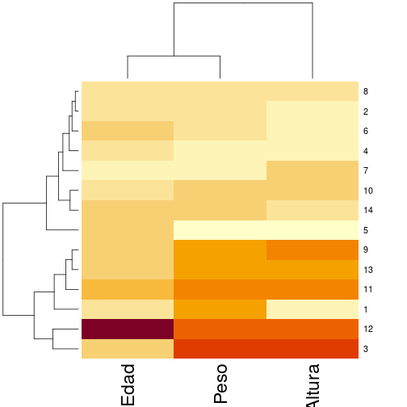
Con este paquete también podremos pasar un filtro a nuestros datos y solo devolver los que cumplan una condición, por ejemplo, que la altura sea menor a 165 cm o los hombres de más de 23 años.
filter(datos2, Altura<165)
## Nombre Peso Altura Edad Sexo
## 1 Juana Garcia 77 163 23 M
## 2 Silvia Lopez 58 163 23 M
## 3 Laura Perez 55 162 23 M
## 4 Adela 47 160 26 M
## 5 Yolanda Lopez 60 163 26 M
filter(datos2, Sexo=="M", Edad>23)
## Nombre Peso Altura Edad Sexo
## 1 Adela 47 160 26 M
## 2 Yolanda Lopez 60 163 26 M
## 3 Monica Sanchez 65 165 26 M
Una vez hayamos terminado de utilizar el paquete, podemos quitarlo con la orden detach.
detach(package:dplyr)
search()
## [1] ".GlobalEnv" "package:knitr" "package:stats"
## [4] "package:graphics" "package:grDevices" "package:utils"
## [7] "package:datasets" "package:methods" "Autoloads"
## [10] "package:base"
FIN